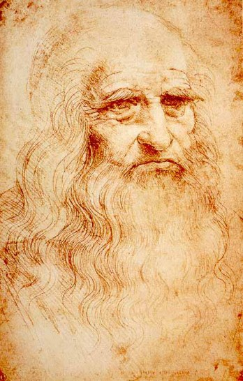

You have reached the last page. Before you close the notebook, here is a face to look at: a portrait in red chalk, traditionally believed to be Leonardo himself later in his life.

The man in that drawing left behind one of the strangest collections in history. Jean Paul Richter, the scholar who translated these notebooks, opened his book by pointing out a sad pattern:
Richter, on Leonardo's biggest works
Two of the three most important were never completed, obstacles having arisen during his life-time, which obliged him to leave them unfinished
Remember the Mona Lisa? Leonardo often left things unfinished. But Richter also noticed something about the notebooks themselves. They did not vanish, and they were highly prized. And yet they ended up scattered:
Richter
the original Manuscripts now scattered through England, Italy and France
Even stranger, for a long time almost no one could read them. Richter wrote:
Richter
To us, now, it seems almost inexplicable that these valuable and interesting original texts should have remained so long unpublished, and indeed forgotten.
Think about what that means. The pages you have been reading, about diving machines, shells, shadows, flying machines and a mattress maker, sat forgotten for a long time, and reading them took a lot of practice with the backwards handwriting. They survived, and now anyone can read them.
One more line from that opening. It is about Leonardo himself, and it is not Richter's own words but a sixteenth-century biographer's, whom Richter quotes:
Vasari, as quoted by Richter
Vasari says, and rightly, in his Life of Leonardo, "that he laboured much more by his word than in fact or by deed"
Richter took this to mean that Leonardo's real legacy may be less the things he finished than the things he wrote down, the questions he could not stop asking. Now the notebook is closed. Which brings us to the last question of the course.
Words to know
- inexplicable
- impossible to explain
- manuscript
- a handwritten document
- legacy
- what a person leaves behind for the future
Try it
Optional. For after your session with Rocky, on your own time. Ask a grown-up before you use any website.
- Start your own notebook this week. On each page, add one drawing, one question you can't answer yet, and one to-do. Try mirror writing for one line.
- Explore more Leonardo activities at the Museum of Science, Boston.